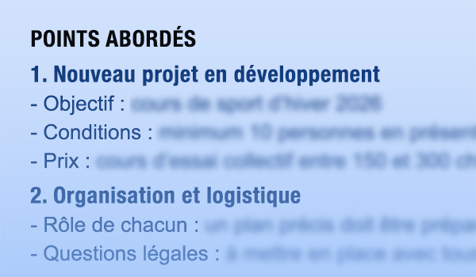

De la réunion à la décision
Transformez vos réunions en texte clair et en compte rendu structuré, avec la confidentialité d’une solution suisse.
Pourquoi choisir Swiss Transcript ?

Sécurité & confidentialité
- Traitement 100 % local
sur serveurs suisses - Aucune donnée transmise à OpenAI, ChatGPT ou aux GAFAM
- Suppression automatique des fichiers après traitement
Proximité & collaboration
- Basés à Lausanne, disponibles pour un contact direct B2B
- Accompagnement personnalisé pour adapter les comptes rendus à votre métier
- Une approche humaine et réactive, au service des organisations suisses
Simple, rapide & adapté à la Suisse
- Enregistrement, transcription et compte rendu automatiques
- Prise en charge du français, de l’allemand et du suisse allemand
- Gain de temps significatif pour vos équipes et contribution à la digitalisation des PME suisses
Swiss Transcript vs. Solutions internationales
Contrairement aux solutions concurrentes qui envoient vos données sur des serveurs externes, nous traitons toutes vos informations localement en Suisse.
| Caractéristiques | Swiss Transcript | Solutions internationales |
|---|---|---|
| Traitement des données | ✓ Suisse | ✗ États-Unis ou Asie |
| Conformité RGPD | ✓ Complète | ✗ Partielle |
| Chiffrement de bout en bout | ✓ Standard | ✗ Parfois |
| Suppression garantie des données | ✓ Immédiate | ✗ Sur demande |
| Utilisation des données pour entraîner l'IA | ✓ Jamais | ✗ Souvent |
| Accès à vos enregistrements | ✓ Jamais | ✗ Parfois |
Fonctionnalités exclusives
Des outils conçus pour vous faire gagner du temps et simplifier votre prise de décision
Différenciation des intervenants

Notre technologie identifie automatiquement les différents intervenants, pour une lecture et une compréhension facilitées.
Horodatage précis

Chaque segment de texte est lié à un horodatage pour retrouver instantanément le moment correspondant dans l'audio.
Personnalisez vos résumés
Choisissez 3 modèles de résumés parmi nos propositions. Et si besoin, nous créons votre version sur mesure, adaptée à vos usages.
Tarifs transparents
Le tarif à la minute est de 0.20 CHF / min (12 CHF / heure)
mais vous avez la possibilité d’économiser en profitant de nos packs avantageux.
PACK 1
1 h créditée
sans limite de validité
Essayez 30 min gratuitement
PACK 5
5 h créditées
sans limite de validité
Essayez 30 min gratuitement
PACK 10
10 h créditées
sans limite de validité
Essayez 30 min gratuitement
Une solution adaptée à vos besoins métiers
PME
Structurez vos comptes rendus RH pour homogénéiser vos pratiques, faciliter la décision et gagner du temps.
Médical et santé
Simplifiez la prise de notes nomade pour gagner du temps et vous concentrer sur vos patients.
Assurance maladie et sociale
Simplifiez la rédaction de rapports et de suivis, tout en protégeant les données sensibles.
Institutions publiques
Documentez vos séances avec rigueur, dans le respect des normes et de la souveraineté suisse.
Organismes à but non lucratif
Centralisez et sécurisez vos échanges pour mieux suivre vos projets et bénéficiaires.
Chercheurs et monde académique
Libérez-vous de la transcription et concentrez-vous sur l’analyse et votre recherche.
Ils nous font confiance
Découvrez les témoignages de nos utilisateurs et utilisatrices satisfait.es.
Milieu académique
« Swiss Transcript nous fait vraiment gagner du temps. On peut partir d’un transcript solide et juste corriger, au lieu de tout faire à la main. Et surtout, le respect de la confidentialité est là : pas de tiers, tout reste local. C’est super rassurant pour nos projets sensibles, notamment en santé. Je suis ravi d’avoir découvert ce service dès ses débuts et j’ai hâte de voir son évolution. »
Collectivité publique
« On gagne un temps fou sur les PV car on n’est plus obligées de tout retaper mot à mot après les séances. On attend de voir les évolutions pour les résumés automatiques, mais en l’état ça nous aide déjà à aller à l’essentiel, tout en gardant la traçabilité. C’est sécurisé, on peut supprimer les fichiers tout de suite. Je trouve que c’est vraiment une aide précieuse dans notre travail. »
Santé mentale
« Étant psychologue, la protection des données est une priorité absolue. Avec Swiss Transcript je me sens en confiance sur ce point. Par ailleurs, la qualité de la transcription est également au rendez-vous, avec au final peu d’erreurs à corriger lors de la relecture. Le service a donc un excellent rapport qualité prix pour mon usage. »
Compatible avec tous vos appareils
Utilisez vos enregistrements depuis n'importe quelle source

Smartphone, tablette, ordinateur
Enregistrez votre réunion en direct ou importez un fichier déjà enregistré.
Dictaphone
Importez facilement les fichiers de votre dictaphone professionnel.
Profitez de 30 minutes gratuites pour essayer!
Commencez dès aujourd'hui et découvrez comment notre service peut vous faire gagner du temps tout en préservant la confidentialité de vos données.
Essayer gratuitement Voir les tarifs